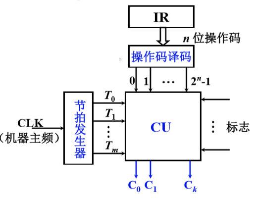
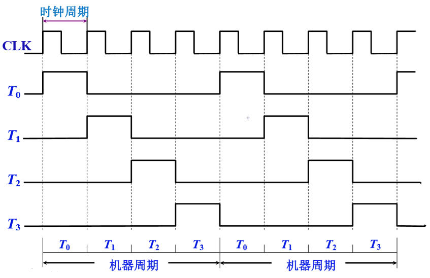
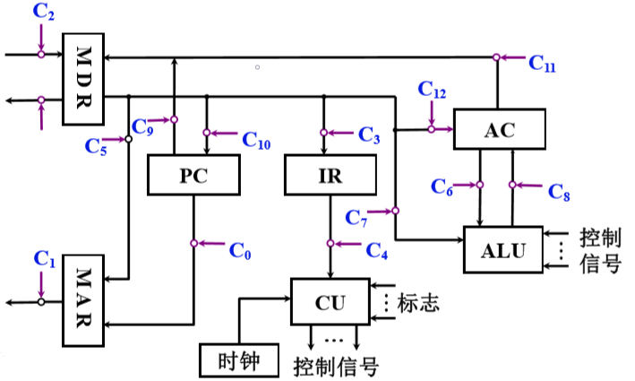
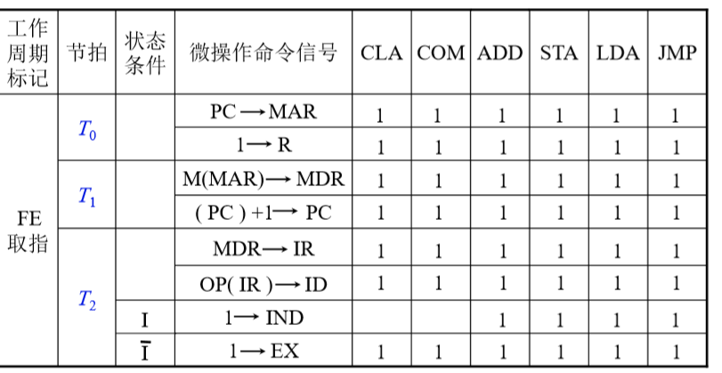
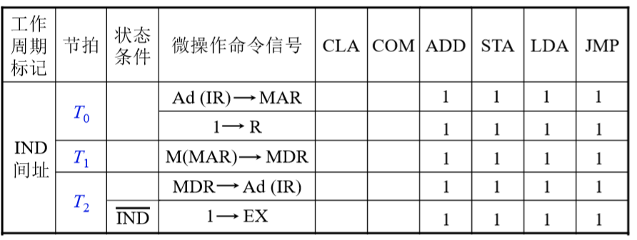
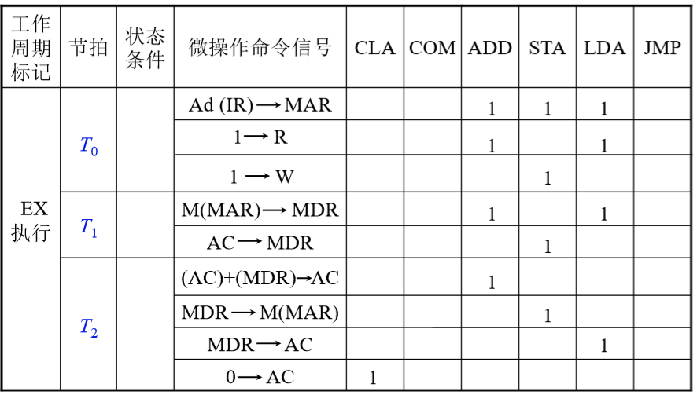
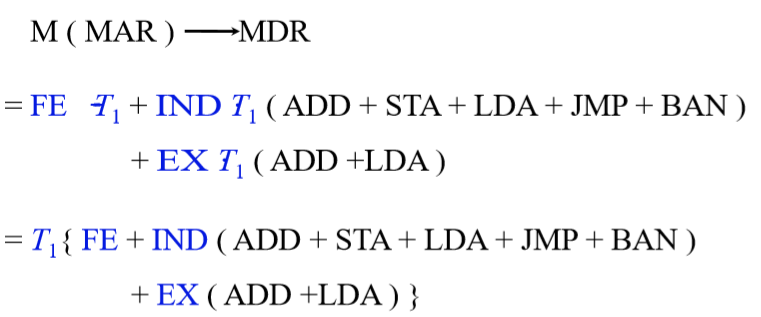
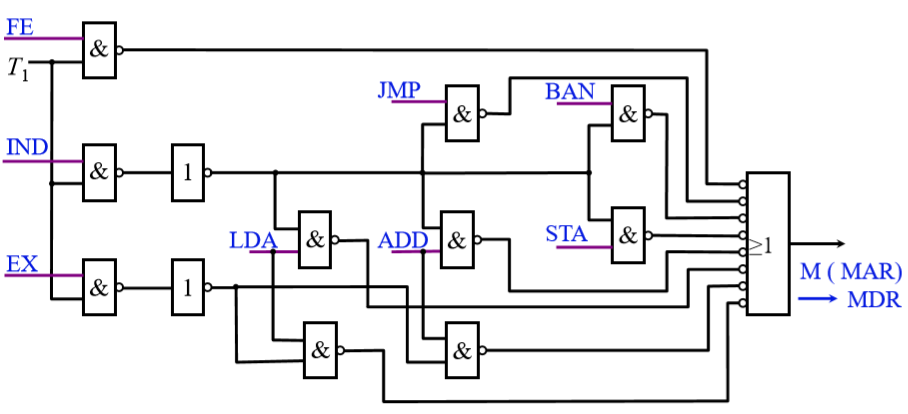

组合逻辑设计 链接到标题
组合逻辑控制单元框图 链接到标题
CU 外特性 链接到标题

CU 发出控制信号，信号之间有先后关系，节拍发生器产生的节拍作为 CU 的输入，节拍发生器外接入 CLK(机器主频)，产生多个节拍信号，每个节拍信号的起始端,CU 会产生命令，IR 的指令的操作码部分需要译码，n 位操作码可以译码出 $2^n$ 个结果。
节拍信号 链接到标题

微操作的节拍安排 链接到标题

采用同步控制方式，也就是有一个统一的时钟信号来控制各个部件之间的交互，假设我们所设计一个机器周期内有三个节拍(时钟周期)，并且 CPU 内部结构采用非总线方式。
安排微操作时许的原则 链接到标题
- 微操作的先后顺序不得随意更改
- 被控对象不同的微操作尽量安排在一个节拍内完成
- 占用时间较短的微操作，尽量安排在一个节拍内完成，并允许有先后顺序
取指周期微操作的节拍安排 链接到标题
-
$T_0$，不同的微操作可以安排在一个周期内完成- PC->MAR
- 1->R
-
$T_1$，同样按照原则二- M(MAR)->MDR
- (PC)+1->PC
-
$T2$，两个微操作占用时间较短，一个微操作可在时钟周期的上升沿，一个在下降沿完成- MDR->IR
- OP(IR)->ID
间址周期微操作的节拍安排 链接到标题
$T_0$- Ad(IR)->MAR
- 1->R
$T_1$- M(MAR)->MDR
$T_2$- MDR->Ad(IR)
执行周期微操作的节拍安排 链接到标题
-
CLA(对累加器进行清零)，
$T_2$: 0->AC -
COM(对累加器的内容按位取反)，
$T_2$: AC(取反)->AC -
SHR(AC 当中保存的内容右移)，
$T_2$: L(AC)->R(AC),$AC_0−>AC_0$ -
CSL(循环左移)，
$T_2$: R(AC)->L(AC),$AC_0−>AC_n$ -
STP(停机命令)，
$T_2$: 0-G -
ADD X(将 X 寄存器保存的内容和 AC 的内容相加)
$T_0$，Ad(IR)->MAR$T_1$，M(MAR)->MDR$T_2$，(AC)+(MDR)->AC
-
STA X(将 AC 的数据存入 X 中)
$T_0$，Ad(IR)->MAR$T_1$，AC->MDR$T_2$，MDR->M(MAR)
-
LDA X(将 X 中的数据取出送入 CPU 并且保存进 AC)
$T_0$，Ad(IR)->MAR$T_1$，M(MAR)->MDR$T_2$，MDR->AC
-
JMP X(跳转到给定的地址)，
$T_2$: MDR->AC
中断周期微操作的节拍安排 链接到标题
$T_0$: 0->MAR; 1->W$T_1$: PC->MDR$T_2$: MDR->M(MAR);向量地址->PC
组合逻辑设计步骤 链接到标题
列出操作时间表 链接到标题



写出微操作命令的最简表达式 链接到标题

画出逻辑图 链接到标题

思路清晰，简单明了
庞杂，调试困难，修改困难
速度快(RISC)